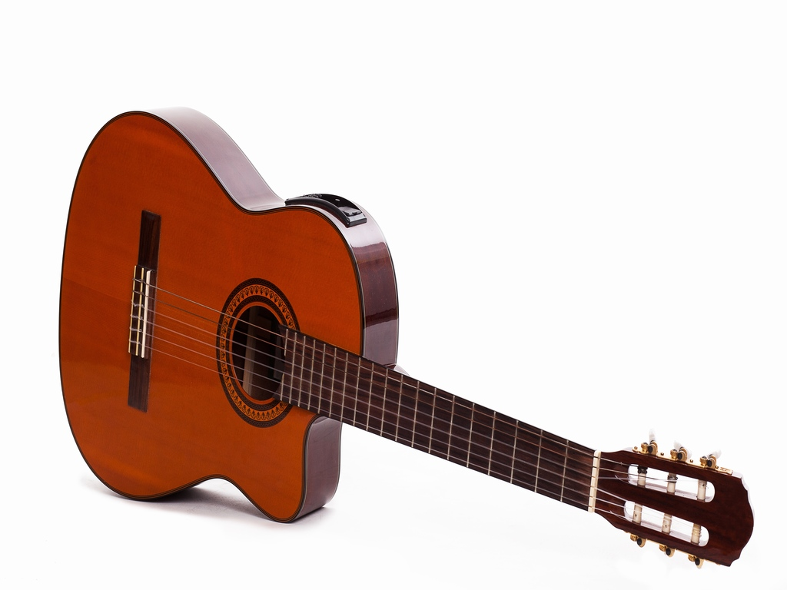

Instrumento de cuerda con caja de resonancia que produce sonido sin necesidad de amplificación eléctrica.

Guitarra de cuerdas de nailon, ideal para tocar música clásica y flamenco, con una sonoridad suave y cálida.
Guitarra que necesita amplificación eléctrica para producir sonido, utilizada ampliamente en géneros como rock, blues y jazz.